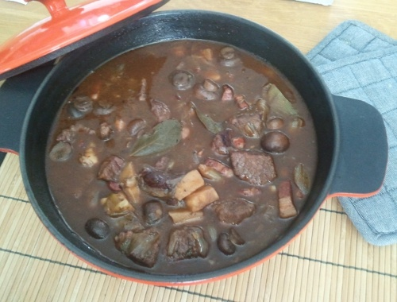

Beef Bourguignon

En jättegod fransk köttgryta med grytkött, rödvin, svamp, fläsk och schalottenlök. Beef bourguignon är en av de mest kända och klassiska franska köttgrytorna. Svamp som skogschampinjon men också svenska kantareller eller trattkantareller passar bra i köttgrytan. Ostronskivling, vanlig champinjon och/eller shii-take funkar också.
Som tillbehör till köttgrytan passar rostad potatis, kokt potatis, pressad potatis eller gratinerat eller vanligt potatismos. Råris, quinoa eller couscous passar också till köttgrytan.
Gör gärna köttgrytan någon dag i förväg då den blir godare om den får stå någon dag i kylen.
Köttgrytan är god med fylligt rödvin (från Bourgougne kanske) eller ett fylligt Shiraz från Australien.
Ingredienser
- 1 kg grytbitar, nötkött av fransyska, högrev el. ytterlår
- 4 schalottenlökar eller 1 stor gul lök
- 2 vitlöksklyftor
- 0,5 purjolök
- 1 paket bacon
- 2 burkar kantareller
- 3 msk tomatpuré
- 3 lagerblad
- 0,5 tsk torkad timjan eller 2-3 kvistar färsk timjan
- 2 msk vetemjöl
- 1 tsk salt
- 1 tsk socker
- 4 krm vitpeppar
- 6 dl rödvin
- 3 dl vatten
- 1 msk kantarellfond
- 2 msk soja
- 2 msk hackad persilja
Tillagning
- Bryn köttet i omgångar i en stekpanna och lägg åt sidan.
- Skala och hacka lök och vitlök
- Rensa purjolök, dela den längs med på mitten och skölj den. Dela den i halva och hacka den grovt.
- Skär bacon i bitar och fräs i smör i en stor gryta.
- Tillsätt lök och vitlök till grytan
- Hacka svampen grovt och tillsätt till grytan
- Tillsätt tomatpuré, timjan och lagerblad. Fräs någon minut och rör sedan ut mjölet.
- Tillsätt salt, socker, vitpeppar samt vin, vatten, fond och soja.
- Sätt på lock och koka köttgrytan på låg värme i ca en timme eller tills köttet är mört. Högrev och segare grytbitar kokar du 1,5-2 timmar. Mörare grytbitar behöver ej koka över en timme.
- Rör ut maizena i kallt vatten, tillsätt och rör om. Låt puttra i 5 minuter.
- Ta grytan av värmen och smaka av med soja, socker samt salt och vitpeppar efter smak.
- Innan servering rör du i hackad persilja.
- Tycker du grytan är för lös kan du reda den med ytterligare 2 msk maizena utrört i 1 dl vin eller vatten. Rör i lite taget under tiden du kokar grytan. Då tjocknar grytan efter hand som du tillsätter maizenan. Grytan ska vara rätt lös men lite såsig också såklart.